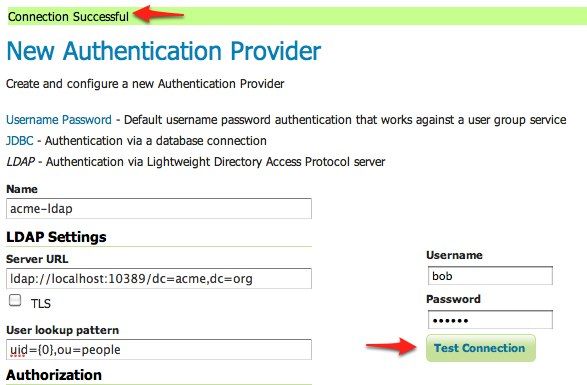

Authentication with LDAP¶
이 예제에서 GeoServer의 LDAP 지원을 소개하고 LDAP 서버에 대한 인증 작업을 설정하는 과정을 단계별로 설명합니다. 이 예제를 진행하기 전에 LDAP authentication 섹션을 읽을 것을 권장합니다.
LDAP server setup¶
이 예제는 LDAP 모의 서버를 이용할 것입니다. acme-ldap.jar 파일을 다운로드한 후 다음과 같이 실행하십시오.
java -jar acme-ldap.jar
화면에 다음과 같은 내용이 출력되어야 합니다.
Directory contents:
ou=people,dc=acme,dc=org
uid=bob,ou=people,dc=acme,dc=org
uid=alice,ou=people,dc=acme,dc=org
uid=bill,ou=people,dc=acme,dc=org
ou=groups,dc=acme,dc=org
cn=users,ou=groups,dc=acme,dc=org
member: uid=bob,ou=people,dc=acme,dc=org
member: uid=alice,ou=people,dc=acme,dc=org
cn=admins,ou=groups,dc=acme,dc=org
member: uid=bill,ou=people,dc=acme,dc=org
Server running on port 10389
다음은 LDAP 데이터베이스의 위계구조(hierachy)를 보여주는 다이어그램입니다.

이 LDAP 트리(tree)는 다음과 같이 구성됩니다.
- 루트 영역(root domain) 구성 요소인 dc=acme,dc=org
- user 및 admin이라는 2개의 조직 단위(그룹)
- user 그룹에 속한 bob과 alice라는 2명의 사용자
- admin 그룹에 속한 bill이라는 사용자
Configure the LDAP authentication provider¶
GeoServer를 실행하고 admin 사용자로 웹 관리자 인터페이스에 로그인합니다.
사이드 메뉴의 Security 섹션 아래 있는 Authentication 링크를 클릭하십시오.

Authentication Providers 패널로 스크롤해서 Add new 링크를 클릭하십시오.

LDAP 링크를 클릭하십시오.

설정 서식의 항목에 다음과 같이 입력하십시오.
- Name에 “acme-ldap”를 입력합니다.
- Server URL에 “ldap://localhost:10389/dc=acme,dc=org” 를 입력합니다.
- User lookup pattern에 “uid={0},ou=people”을 입력합니다.
오른쪽에 있는 연결 테스트 서식에 사용자명 “bob”, “secret”을 입력하고 Test Connection 버튼을 클릭해서 LDAP 연결을 검사합니다.
페이지 상단에 연결 성공 메시지가 표출되어야 합니다.
저장하십시오.
다시 Authentication 페이지로 돌아와 Provider Chain 패널로 스크롤한 다음, acme-ldap 제공자를 Available에서 Selected로 옮깁니다.

저장하십시오.
Test a LDAP login¶
GeoServer 홈페이지로 이동해서 admin 계정을 로그아웃합니다.
비밀번호 “secret”를 써서 “bob” 사용자로 로그인하십시오.

“bob” 계정에 관리자 롤이 매핑되지 않았기 때문에 로그인해도 관리자 기능을 이용할 수 없습니다. 다음 섹션에서 GeoServer가 LDAP 데이터베이스에서 나온 그룹에 롤을 매핑하도록 설정할 것입니다.
Map LDAP groups to GeoServer roles¶
인증 작업에 LDAP을 이용할 경우 GeoServer는 LDAP 그룹명에 접두사 ROLE_을 붙이고 그 결과 나온 문자열을 모두 대문자로 변환해서 LDAP 그룹에 GeoServer 롤을 매핑합니다. 예를 들면 “bob”과 “alice”는 user 그룹에 속해 있으므로 인증 작업 후 ROLE_USER라는 롤을 할당받게 됩니다. 마찬가지로 “bill”은 admin 그룹에 속해 있으므로 ROLE_ADMIN이라는 롤을 할당받게 됩니다.
웹 관리자 인터페이스에서 로그아웃한 후 다시 admin으로 로그인합니다.
Authentication 페이지로 이동합니다.
Authentication Providers 패널로 스크롤해서 acme-ldap을 클릭합니다. link.

설정 페이지의 서식 항목에 다음과 같이 입력하십시오.
- Group search base에 “ou=groups”를 입력합니다.
- Group search filter에 “member={0}”를 입력합니다.
첫번째 항목은 그룹이 위치해 있는 LDAP 디렉터리 트리의 노드(node)를 설정합니다. 이 경우 groups라는 조직 단위입니다. 두번째 항목은 특정 사용자가 속해 있는 그룹의 위치를 찾기 위해 이용하는 LDAP 쿼리 필터를 설정합니다. {0}는 사용자의 uid로 대체되는 대체 기호(placeholder)입니다.
저장하십시오.
이 단계에서 LDAP 제공자는 인증된 사용자에게 해당 사용자가 속해 있는 그룹을 기반으로 하는 롤을 할당할 것입니다. 그러나 GeoServer의 관리자 롤의 명칭은 ROLE_ADMINISTRATOR입니다. 따라서 “bill”이 ROLE_ADMIN 롤을 할당받았더라도 관리자 권한을 승인받은 것은 아닙니다. 이 상황을 바로잡기 위해 GeoServer의 롤 서비스가 ROLE_ADMIN을 관리자 롤로 취급하도록 재설정합니다.
사이드 메뉴의Security 섹션 아래 있는 Users,Group,Roles 링크를 클릭하십시오.
Role Services 패널로 스크롤해서 default 링크를 클릭하십시오.
Roles 탭으로 이동하십시오.
ROLE_ADMIN이라는 새로운 롤을 추가합니다.
저장하십시오.
Settings 탭으로 이동하십시오.
Administrator role 드롭다운 메뉴에서 ROLE_ADMIN을 선택하십시오.
저장하십시오.
이 단계에서 admin LDAP 그룹에 속한 사용자가 (인증을 받았다면) 관리자 전체 권한을 부여받아야 합니다. 관리자 계정을 로그아웃한 다음 사용자명 “bill”, 비밀번호 “hello”를 써서 로그인합니다. 로그인에 성공하면 전체 관리자 기능을 이용할 수 있을 것입니다.